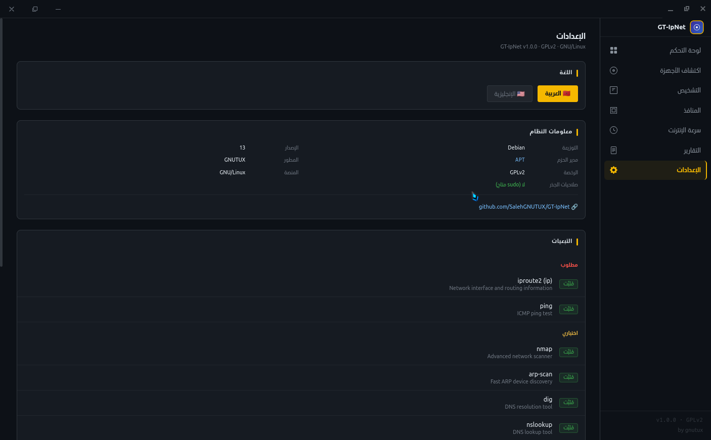
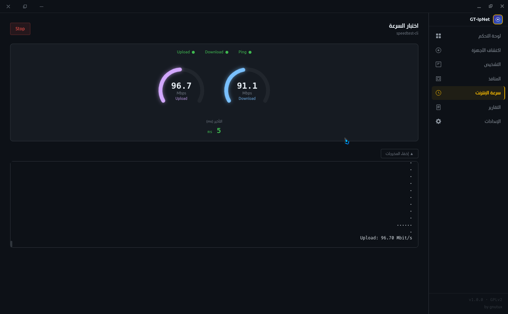

الآن مع ضابط الشبكة — حجب وتحديد الأجهزة، قفل البرنامج، أيقونة Tray،
اكتشاف الشبكات المجاورة، والتعرف على MAC العشوائي. كل ذلك بواجهة عربية كاملة وآمنة.
طوّر بواسطة GNUTUX • مستودع المشروع • 🌐 الموقع الرسمي
قفزة نوعية في التحكم بالشبكة المحلية مع ميزات متقدمة للأمان والإدارة.
حجب الإنترنت عن أي جهاز (دائم أو بمؤقت زمني) وتحديد عرض النطاق الترددي (128Kbit–10Mbit) عبر ARP Spoofing + iptables.
كلمة مرور خاصة (SHA-256) لحماية البرنامج عند الفتح والإغلاق، مستقلة عن كلمة مرور الجذر.
البرنامج يعيش في شريط النظام. نقرة واحدة للإظهار/الإخفاء مع حوار تأكيد الإغلاق (تصغير أو إغلاق).
ما الجديد في v2.0 مقارنةً بـ v1.0
| الميزة | v1.0.0 | v2.0.0 |
|---|---|---|
| اكتشاف الأجهزة | ✅ | ✅ محسّن |
| كشف MAC العشوائي | ❌ | ✅ جديد |
| أسماء الأجهزة الحقيقية | ✅ أساسي | ✅ متقدم (avahi + NetBIOS) |
| اكتشاف الشبكات المجاورة | ❌ | ✅ جديد |
| ضابط الشبكة (حجب/تحديد) | ❌ | ✅ جديد |
| قفل البرنامج | ❌ | ✅ جديد |
| أيقونة Tray | ❌ | ✅ جديد |
| وضع الجلسة (كلمة مرور مرة واحدة) | ❌ | ✅ جديد |
| عداد تنازلي للحجب المؤقت | ❌ | ✅ جديد |
| فحص المنافذ | ✅ | ✅ محسّن (أسماء البرامج + PID) |
| قياس السرعة | ✅ | ✅ محسّن (مقاييس دائرية) |
| تشخيص DNS/Traceroute/Ping | ✅ | ✅ |
| التقارير وسجلات الأخطاء | ✅ | ✅ محسّن |
| الواجهة العربية/الإنجليزية | ✅ | ✅ |
الإصدار 2.0 بواجهة Electron + React مع تحكم كامل بالشبكة المحلية.

لقطة الشاشة: الواجهة الرئيسية
فحص سريع أو شامل مع تحديد نوع الجهاز وكشف MAC العشوائي تلقائياً

لقطة الشاشة: قياس السرعة
مقياسان دائريان متحركان بقيم حية أثناء الاختبار
الجمع بين قوة arp-scan و nmap و arpspoof و iptables في واجهة رسومية ثنائية اللغة.
فحص سريع أو شامل مع كشف MAC العشوائي، أسماء الأجهزة الحقيقية، واكتشاف الشبكات المجاورة.
حجب الإنترنت وتحديد عرض النطاق لأي جهاز. مؤقتات زمنية، حماية ذاتية، وتنظيف تلقائي.
اتصالات نشطة مع أسماء البرامج و PID. تبويبان: اتصالات / منافذ استماع. فحص nmap للأجهزة البعيدة.
اختبار خوادم DNS، تتبع مسار الحزم، و Ping متقدم لتحليل استقرار الاتصال.
مقياسان دائريان متحركان بقيم حية أثناء الاختبار. حفظ آخر نتيجة مع التاريخ.
دعم كامل للعربية والإنجليزية مع RTL. قفل البرنامج، أيقونة Tray، وشاشة ترحيب.
حزم موقعة لجميع التوزيعات الرئيسية. انقر على SHA256 للنسخ.
GT-IpNet بدأ كبرنامج نصي للطرفية (Shell Script) ولا يزال متاحاً للمستخدمين المتقدمين. النسخة القديمة تدعم جميع الميزات الأساسية مباشرة من سطر الأوامر.
📦 المميزات الرئيسية | Key Features
مسح سريع للشبكة
./GT-IpNet --scanإنشاء تقرير فوري
./GT-IpNet --reportتحديد اللغة
LANG=ar ./GT-IpNet📥 التثبيت السريع | Quick Install
sudo apt install arp-scan nmapArch Linux:sudo pacman -S arp-scan nmapالمكدس التقني المستخدم في بناء الواجهة الرسومية. معمارية ثلاثية العمليات آمنة.
Electron 31
Shell
React 18
Frontend
TypeScript 5
Language
Tailwind v4
Styling
Zustand 4
State